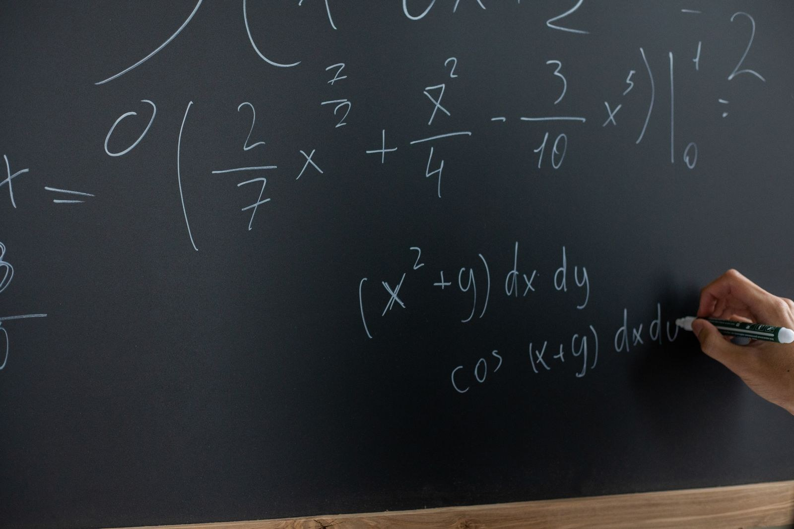

Research notebook · §3 — the notebook
The person, and the method she answers to.
I trained as a theoretical physicist — a doctorate on quantum error correction, then postdoctoral years in two countries working on resource estimation: the unglamorous discipline of counting what a quantum computation actually costs, in physical qubits, in gates, in time, at error rates that exist rather than error rates that would be convenient.
In 2018 I left a group-leader track to work independently. The reason was specific: the field's bottleneck had moved. The mathematics was in good shape; the claims were not. Decks and roadmaps were making promises the underlying numbers had never been asked about, and the people funding them had no referee. So the practice is a referee for hire — one who shows the working.
The working rules have not changed since the first notebook. Methods are public: any study's analysis can be inspected, re-run and argued with. Clients are confidential: names, documents and data stay in the file. And every conclusion travels with its assumptions, because in this field the assumption list is the conclusion — the rest is arithmetic.
The opinion I am most often paid to repeat, and will state here for free: a field that cannot say "not yet" in writing will eventually have it said about them, by people who are less kind.

§3.1 · Method · how a study runs
Four stages. The second one is the practice.
Question framing
The claim is rewritten as a statement that can be false: not "quantum-ready by 2028" but "at problem size N, with gate error ε, the quantum method beats the named classical method on cost per answer." If a claim cannot be written this way, that is the first finding, and it is reported as one.
The assumptions audit
Every number the claim stands on is listed and labelled — measured, modelled, or assumed — with its source. This list is agreed with the client before analysis begins, so the conclusion cannot be renegotiated afterwards by quietly swapping a number.
Analysis
Resource estimation, error modelling, crossover analysis — at the level of the claim, with the arithmetic shown in full. Where the question allows it, the analysis plan is written down before the decisive computation is run. Boring, and decisive.
The report
Page one: the conclusion. Page two: the assumptions it stands on, with the sensitivity — which single assumption, if it moved, would change the answer. The remaining pages are the working, so that any competent reader can check the referee. Not yet is a complete page one.
§3.2 · The honesty page · correcting the cartoon
Four sentences this practice will not print.
Quantum information suffers from a cartoon version of itself, repeated by people who should know better because it raises money. These corrections appear in the practice's reports so often that they live here permanently.
"A qubit is a tiny quantum computer."
A qubit is a physical system with a state — one term in a very large description. The computer is everything around it: the control electronics, the cryogenics, the error correction that spends thousands of physical qubits to protect one logical one, and the patience. Counting qubits without asking their quality is like counting a bridge in rivets.
"Superposition means it tries every answer at once."
If that were the mechanism, reading the answer out would be free. It is not: a measurement returns one outcome, and the entire art of algorithm design is arranging interference so that wrong answers cancel and right ones reinforce — for the few problem structures where that trick exists. Most problems have no such structure, and no amount of superposition changes that.
"Entanglement lets particles communicate instantly."
Entanglement produces correlations stronger than any classical system can match — and transmits no message whatsoever. The no-signalling theorem is not a loophole waiting for a cleverer engineer; it is a theorem. Any pitch that needs faster-than-light communication from entanglement needs a different universe, and should say so in the deck.
"Quantum speedup" — stated without its assumptions.
A speedup is a scaling statement: how cost grows with problem size, for a specified algorithm, at specified error rates, with specified overheads, against the best classical method — which also improves. Detached from those five attachments, the phrase is advertising. Attached, it is sometimes true, and worth a great deal. The attachments are the work.
§3.3 · Engagement terms · printed in advance
The terms, before anyone signs anything.
- Fees. Study days at €1,350, review days at €1,600, assumptions audits at a fixed €3,800 per document, briefing sessions at €950. The engagement letter fixes the total once the claim set is enumerated; it does not drift.
- No conclusion-contingent fees. No part of any fee depends on what a study concludes, and the practice holds no equity in any organisation whose claims it assesses. A referee with a position is a fan.
- Conflicts declared first. Prior work for a competitor, a funder or a referee panel is declared before engagement, in writing. Where a conflict is real, the engagement is declined and the reason stated.
- Confidentiality. Client documents and data remain in the file and are never quoted identifiably. Methods, by contrast, are public by default — a client is buying the conclusion, not the referee's silence about how refereeing works.
- Null results are deliverables. A study whose honest outcome is negative or null is delivered, billed and — with the client's consent on identifying details — publishable, exactly like a positive one. This clause is in the letter because Study № 41 needed it to be.
- Corrections. If a delivered report contains an error of mine, the corrected report is reissued to every recipient of the original, at no fee, with the correction marked. The notebook keeps the errata page; it currently has entries, and they are not hidden.
Terms acceptable? The correspondence page is §4.
Bring the document the claim lives in. The first reply will be questions, not a quote — the claim set has to be enumerated before a fee can be fixed.